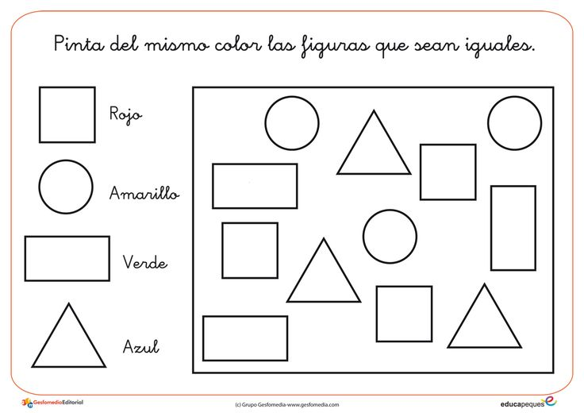

EVALUACION EDUCATIVA
A partir de el conocimiento obtenido a traves de los ejercicios pasados, ahora pasaremos a realizar algunas evaluaciones para observar el proceso de aprendizaje de nuestros estudiantes. con esto lograremos entender en que punto de aprendizaje se encuentran, las dificultades que tienen cada uno de nuestros estudiantes, y tambien podremos observar en que podemos ayudarlos para que su aprendizaje sea eficiente. las evaluaciones que vamos a presentar sonsistiran en identificar cada figura geometrica, esto lo lograremos a traves de los colores cada figura sera mostrada con un color, y los estudiantes deben colorear para identificar dicha figura.
